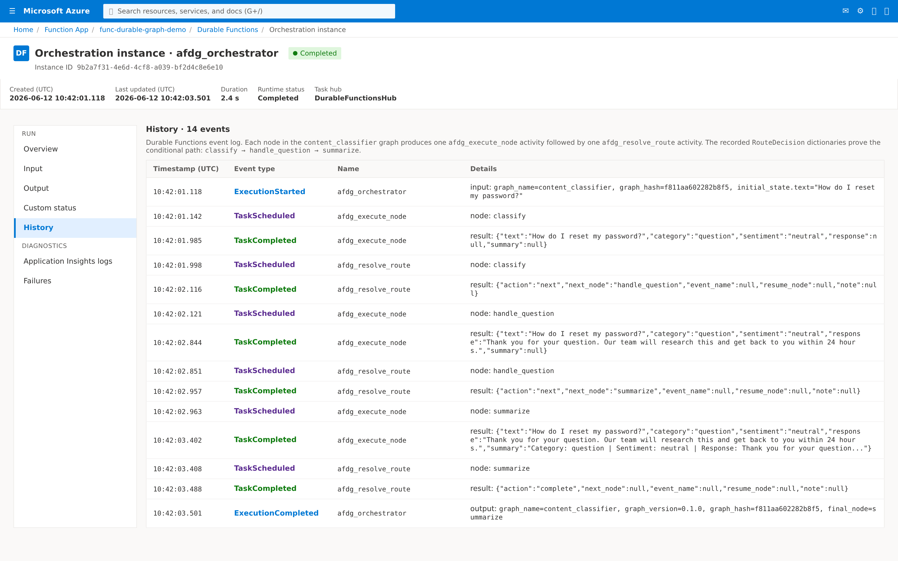

Content Classifier Example¶
This example demonstrates conditional routing — a classify node inspects
the input and a route handler directs execution to one of several specialised
handlers, all without external events.
Overview¶
The content classifier graph:
- Classifies the input text by category and sentiment
- Routes to the appropriate handler based on category
- Handles the content with a specialised response
- Summarizes the result
flowchart TD
A[classify] -->|question| B[handle_question]
A -->|complaint| C[handle_complaint]
A -->|feedback| D[handle_feedback]
B --> E[summarize]
C --> E
D --> EState Model¶
from pydantic import BaseModel
class ContentState(BaseModel):
text: str
category: str | None = None
sentiment: str | None = None
response: str | None = None
summary: str | None = None
Node Handlers¶
classify¶
Determines category and sentiment from the input text:
def classify(state: ContentState) -> dict:
lower = state.text.lower()
if "?" in state.text or any(w in lower for w in ("how", "what", "why", "when")):
category = "question"
elif any(w in lower for w in ("broken", "terrible", "worst", "complaint", "angry")):
category = "complaint"
else:
category = "feedback"
positive = {"great", "good", "love", "excellent", "thanks"}
negative = {"bad", "broken", "terrible", "worst", "angry", "hate"}
words = set(lower.split())
if words & negative:
sentiment = "negative"
elif words & positive:
sentiment = "positive"
else:
sentiment = "neutral"
return {"category": category, "sentiment": sentiment}
route_after_classify¶
Uses RouteDecision.next() to direct execution based on category:
from azure_functions_durable_graph import RouteDecision
def route_after_classify(state: ContentState) -> RouteDecision:
handler_map = {
"question": "handle_question",
"complaint": "handle_complaint",
"feedback": "handle_feedback",
}
target = handler_map.get(state.category or "", "handle_feedback")
return RouteDecision.next(target)
Specialised handlers¶
Each handler generates a category-appropriate response:
def handle_question(state: ContentState) -> dict:
return {
"response": (
"Thank you for your question. Our team will research this "
"and get back to you within 24 hours."
),
}
def handle_complaint(state: ContentState) -> dict:
return {
"response": (
"We're sorry to hear about your experience. A support specialist "
"has been assigned to resolve this issue."
),
}
def handle_feedback(state: ContentState) -> dict:
return {
"response": "Thank you for your feedback! We appreciate you taking the time to share.",
}
summarize¶
Combines all fields into a final summary:
def summarize(state: ContentState) -> dict:
return {
"summary": (
f"Category: {state.category} | Sentiment: {state.sentiment} | "
f"Response: {state.response}"
),
}
Graph Definition¶
from azure_functions_durable_graph import ManifestBuilder, RouteDecision
builder = ManifestBuilder(
graph_name="content_classifier",
state_model=ContentState,
version="0.1.0",
metadata={"example": True, "profile": "routing"},
)
builder.set_entrypoint("classify")
builder.add_node("classify", classify, route=route_after_classify)
builder.add_node("handle_question", handle_question, next_node="summarize")
builder.add_node("handle_complaint", handle_complaint, next_node="summarize")
builder.add_node("handle_feedback", handle_feedback, next_node="summarize")
builder.add_node("summarize", summarize, terminal=True)
registration = builder.build()
Running the Example¶
Wire it into your function_app.py:
from azure_functions_durable_graph import DurableGraphApp
from examples.content_classifier.graph import registration
runtime = DurableGraphApp()
runtime.register_registration(registration)
app = runtime.function_app
Start a run — question¶
curl -X POST http://localhost:7071/api/graphs/content_classifier/runs \
-H "Content-Type: application/json" \
-d '{"input": {"text": "How do I reset my password?"}}'
Start a run — complaint¶
curl -X POST http://localhost:7071/api/graphs/content_classifier/runs \
-H "Content-Type: application/json" \
-d '{"input": {"text": "This product is terrible and broken"}}'
Check status¶
Expected final state (for a question):
{
"state": {
"text": "How do I reset my password?",
"category": "question",
"sentiment": "neutral",
"response": "Thank you for your question. Our team will research this and get back to you within 24 hours.",
"summary": "Category: question | Sentiment: neutral | Response: Thank you for your question. Our team will research this and get back to you within 24 hours."
}
}
Key Patterns Demonstrated¶
- Conditional routing:
route_after_classifypicks different nodes based on state - Fan-in topology: multiple handler nodes converge to a single
summarizenode - RouteDecision.next(): simple programmatic routing without external events
- State enrichment: each node adds specific fields while preserving existing state
Verify Routing in Azure Portal¶
The conditional routing is visible in the Durable Functions History view
for any run. Each node produces one afdg_execute_node activity followed by
one afdg_resolve_route activity, and the RouteDecision dictionary returned
by route_after_classify is recorded verbatim as the result of the route
activity.
For an input of "How do I reset my password?", the recorded path is
classify → handle_question → summarize:

You can use the same view to verify other branches: a complaint-style input
takes the handle_complaint path and a generic message takes
handle_feedback.